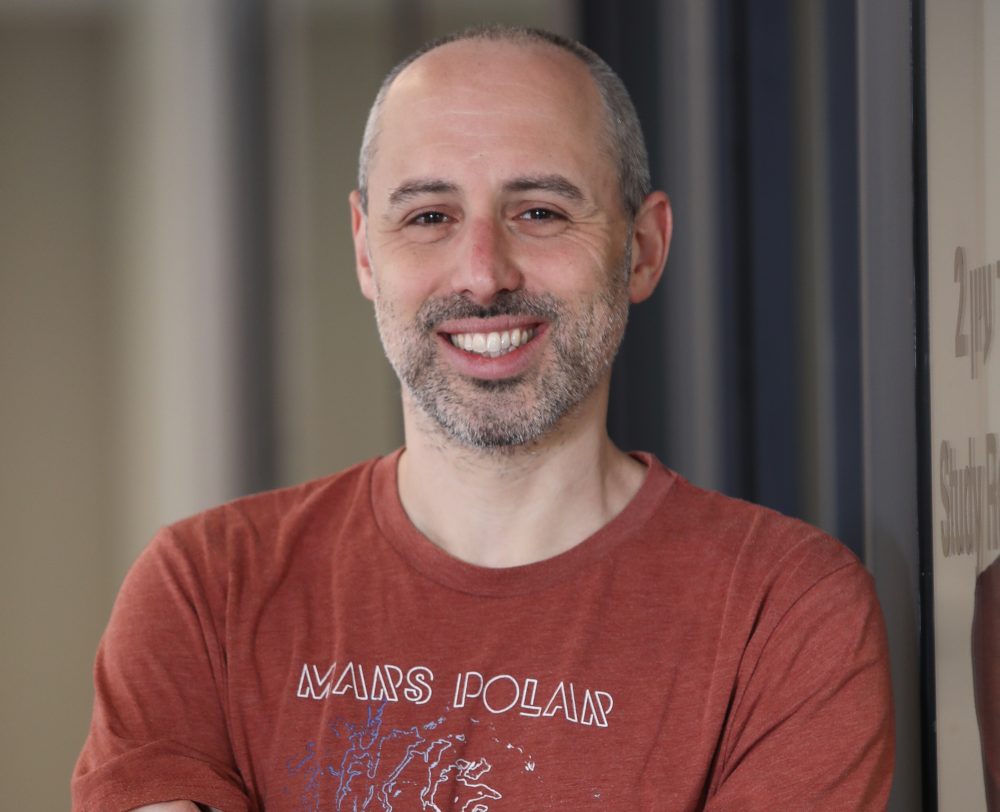
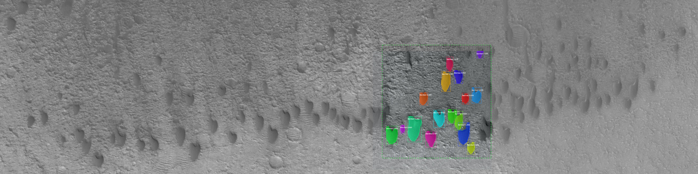
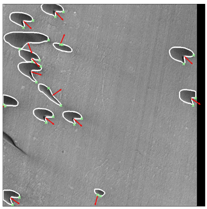
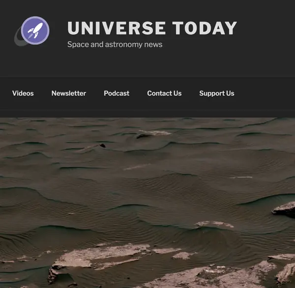
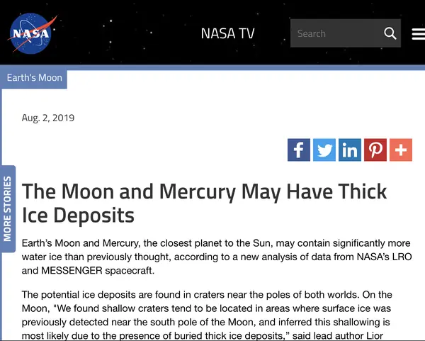
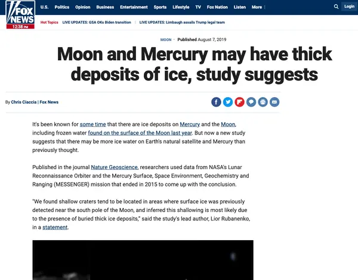
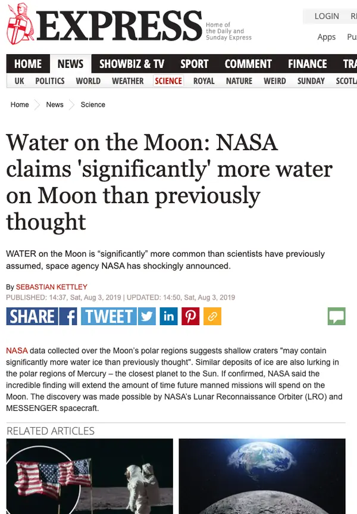
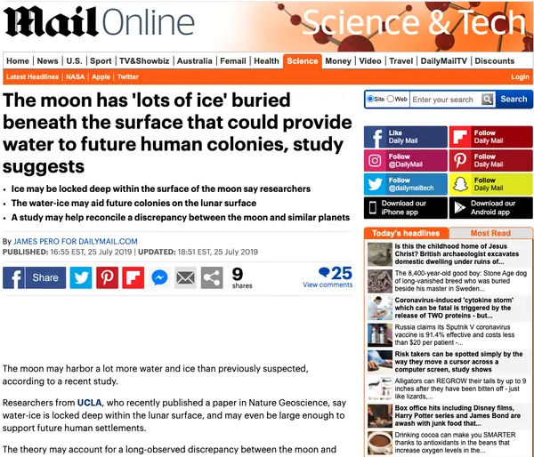

Assistant Professor of Planetary Science
About

I seek to understand how planetary surfaces form and evolve, and how they interact with ice, wind, and the harsh environment of space. To accomplish this goal, I harness the vast amount of remote sensing data gathered by NASA spacecraft and analyze them using statistics, machine and deep learning. As a member of the LRO Diviner team, I work on a variety of problems related to the way surface roughness affects the temperature and the stability of ice on the Moon.
Currently, I am an Assistant Professor at the Department of Earth and Planetary Sciences, Tel Aviv University. Previously, I was a postdoctoral scholar at the Department of Geological Sciences at Stanford University, where I worked with Mathieu Lapotre on applying artificial intelligence to map and investigate topographic features on the surface of Mars. Before that, I completed my PhD at UCLA, working with David Paige on problems related to radiometry and geomorphology on the Moon and Mercury, and my Master's degree at the Weizmann Institute of Science, where I worked with Oded Aharonson on modeling temperatures and ice stability on airless planetary surfaces. My undergraduate research projects focussed on characterizing Transient Luminous Events (TLEs) with Yoav Yair (the Open University) and Colin Price (Tel Aviv University).
Apart from research, I am also very much involved in science outreach. I was the scientific editor-in-chief of "Mada Gadol Bektana" (lit. "Science in a Nutshell"), the largest science outreach non-profit organization in Israel, and give popular science talks aimed at general audiences and professional organizations. From time to time I also publish articles on planetary science or astronomy in Israeli news sites — for example, the potential discovery of a planetary mass object in the Kuiper Belt, based on this paper.
Current Research

Manual interpretation of spacecraft images is robust but does not scale, and it imposes the analyst's own categories onto the data. Working with Yasmin Hayat, we trained two unsupervised networks — a convolutional autoencoder and a masked autoencoder — on 32,000 CTX images of Mars' north polar erg, then used them to characterise 100,000 unseen images without a single manual label.
The masked autoencoder substantially outperformed the convolutional one, reaching 97% accuracy against 80% on the dune/non-dune task. More interestingly, dividing the latent space into a hundred clusters rather than six recovers a continuum — dense barchanoid ridges grading through isolated barchans, dark sediment, regolith and cratered terrain — rather than forcing sharp boundaries where nature has none. Relating those morphology maps to the Mars Climate Database shows dune-free regions coincide with the thickest seasonal ice, and that asymmetric dunes concentrate where winds are most bimodal.
Micro cold traps — shadows cast by topography at centimetre to hundred-metre scales — are attractive targets for in-situ exploration because they are easy to reach. But how much ice can they actually hold? Using a 3-D thermal illumination model over rescaled LROC NAC terrain, I computed the permanently shadowed volume rather than area, across 140 simulated maps spanning latitudes 75°–90°.
Shadow depth scales at roughly 0.5–1% of a cold trap's lateral size, far shallower than the topography casting it. Comparing that capacity against destruction rates from impact gardening implies a metre-scale cold trap holds ice for only 200–300 ka — so a randomly chosen one will most likely be found empty. Even completely filled, the total volume available to micro cold traps is around two orders of magnitude below Shoemaker crater alone.
Mars has no meteorological network, so its dunes have to serve as the anemometers. Barchans form under roughly unimodal winds, which makes their slipface and horn orientations a direct proxy for sediment transport direction. Here we derived migration directions for over 700,000 barchans outlined globally by a neural network in MRO CTX imagery.
Migration follows continuous pathways thousands of kilometres long, aligned with southern-summer circulation and, strikingly, with mapped dust-storm tracks. Near the north pole we resolve an anti-cyclonic wind corridor that current GCMs miss entirely. Locally, topography takes over: the correlation between wind dispersion and roughness holds below roughly 10–50 km and vanishes above 100 km, meaning craters smaller than that deflect the winds that fill them.
Mars carries a third class of bedform that Earth does not: metre-scale ripples, intermediate between decimetre impact ripples and dunes. Two explanations competed — that they are simply overgrown impact ripples, or that they arise from the same hydrodynamic instability that builds dunes and subaqueous bedforms. The two make different, testable predictions about how bedform size responds to atmospheric density.
Measuring the morphometrics of over a million barchans across Mars, we found the smallest dunes shrink as atmospheric density rises, with a power-law exponent near −2/3 — the same value derived empirically for subaqueous ripples, and squarely within the range hydrodynamic theory predicts. Dune and large-ripple sizes together bracket a forbidden gap in bedform wavelengths. Ancient aeolian sandstones may therefore record the density of the atmosphere they formed under.
In this project I am leading an effort to automatically detect and outline barchan dunes on Mars to extract local and global wind directions. I use Mask R-CNN, an instance segmentation neural network, to find dunes in images obtained by the Mars Reconnaissance Orbiter Context Camera (CTX). The network outputs the dunes' outlines, which are automatically analyzed using a slipface detection algorithm we developed, based on OpenCV's convexity defects algorithm.

Publications
Conference presentations
Press

Universe TodayMars has bizarre dunes thanks to its low atmospheric pressure and strange winds
NASAThe Moon and Mercury may have thick ice deposits
Fox NewsMoon and Mercury have thick deposits of ice
Daily ExpressWater on the Moon
Daily MailThe Moon has 'lots of ice' buried beneath the surfaceContact